Dear Birders,
You are most likely unaware that birders and mathematicians have so much in common. It is a little known fact that birding and mathematics research are long lost cousins… so mathematicians, meet birders; birders, meet mathematicians — you are all cut from the same cloth.
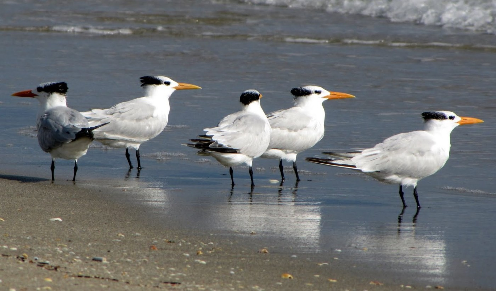
In almost all of my earliest memories of Carlos, he is playing with toy animals, or reading books about habitats, or watching documentaries about fauna. As a kid, I was also very curious about nature, but certainly not to the same extent as my older brother. Perhaps my own curiosity about wildlife developed independently but, most likely, I learned about animals from and following Carlos’ lead, so I could partake in his passion. Although he was a voracious reader of books about all-things wildlife, at some point he began focusing his attention on birds, and his addiction to birding was born.
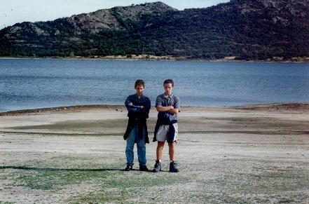
When he was in college and I was in high-school, we started hiking together in natural parks in the vicinity of the city of Madrid: through forests, around lakes, and up mountains. These were challenging hikes for me because of the total mileage, and also due to the weight of the equipment we would carry: food and water (somehow never enough!), binoculars, cameras, land telescope, tripod, and other essentials. Carlos’ determination, however, never faltered. During the hike, there would be frequent stops to scan the landscape with binoculars, looking for birds that were common in the area, but most importantly to search for birds that might have been passing by and were therefore considered rare in those environments. I would sit on a rock, often hungry and cold, while my brother would carefully examine every crane, duck, and seagull in a nearby lake, until silence was broken with a cry of excitement when a species was spotted that he had never seen before. Then, and only then, I would get my turn at the telescope, and admire a seagull that looked to the untrained eye exactly like all the other seagulls, except that my brother assured me that the bird captured by the lens was a Caspian gull instead of the common seagulls that one can see even on the streets of Madrid. I would fake some degree of excitement and hope that we could resume our hike. My brother would pull his small notebook out of the bag, and write the name of the new species in a long list he was compiling. Only then, we could pick up all the equipment, and move to the next observation spot, where I would find a new rock to sit, wait, and contemplate the exhilarating life of a birder.
When I was in college, my brother lived for long periods of time in the south of Spain, counting birds during their migration across the Strait of Gibraltar. Around the same time that I moved to the USA for graduate school, he started to travel across Europe and the north of Africa, to specific locations where a rare bird that cannot be found in Spain had been seen. As the years went by, his trips started to take him farther and farther away, to more exotic locations, but the goal was always the same: observe new species of birds that had not yet been written in his little notebook. I think it is fair to say that, nowadays, he is a fairly well-known birder in Spain. Carlos has written about his adventures looking for birds in a fantastic book, called “Pajarero” (Birder), which I highly recommend to anyone — not just birders! — who enjoys travel books.
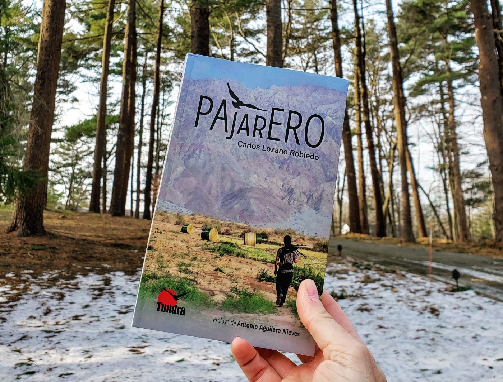
The point of this letter is that it took me years to fully understand birdwatching birding (there is a difference). As much as I love nature, hiking, wildlife, I could not comprehend my brother’s obsession with birds. Clearly, some bird species are magnificent (even fairly common ones, such as hummingbirds) and they capture the attention of just about anyone. That much I could understand, but I was perplexed by my brother’s attention to other less exotic species. Why would anyone be interested in the world of seagulls, for example, where many, many species look so much alike that it is practically impossible to tell them apart? Why would anyone go to (literally) great lengths, in harsh environments, to observe a bird for a few minutes, before the elusive animal takes off never to be seen again? I was dumbfounded. That is, until I became a mathematician and started working on my own research.
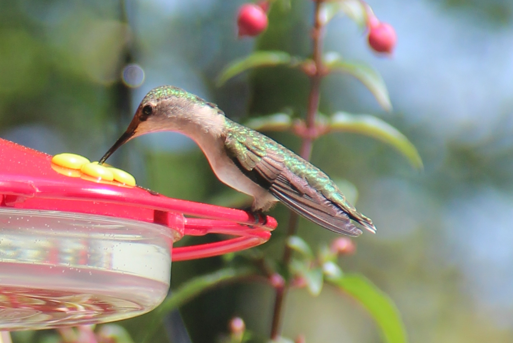
The first time I had a revelation was a summer when I was back in Spain for a visit, and I was trying to explain to my brother the topic of my dissertation research: elliptic curves. Briefly, an elliptic curve is a curve on the plane given by a cubic polynomial equation in two variables, such as $y^2=x^3+1$, or $y^2+y=x^3-7x+6$. The challenge is to find all the rational points on an elliptic curve, that is, find all the solutions of the equation defining the curve, with coefficients given by rational numbers. For example, x=2 and y=0 form a rational solution of y^2+y=x^3-7x+6 and we denote it as (2,0). Other rational points are (-1,3), (4,-7), (93,896), and (47072/7921, -9665550/704969). It turns out that, by a theorem of Louis Mordell, given an elliptic curve, there is a finite set of rational points from which we can generate all other points using a beautiful geometric method (the tangent and secant method). The number of generators is called the rank of the elliptic curve, and one of the most hotly debated questions in number theory is whether the rank of an elliptic curve can be arbitrarily high (the highest rank known is 28 — more on this later). For example, the elliptic curve y^2+y=x^3-7x+6 has rank 3, and all the rational points can be generated by the points (2,0), (-1,3), and (4 , -7). For the mathematicians in the crowd, read this intro to elliptic curves instead.
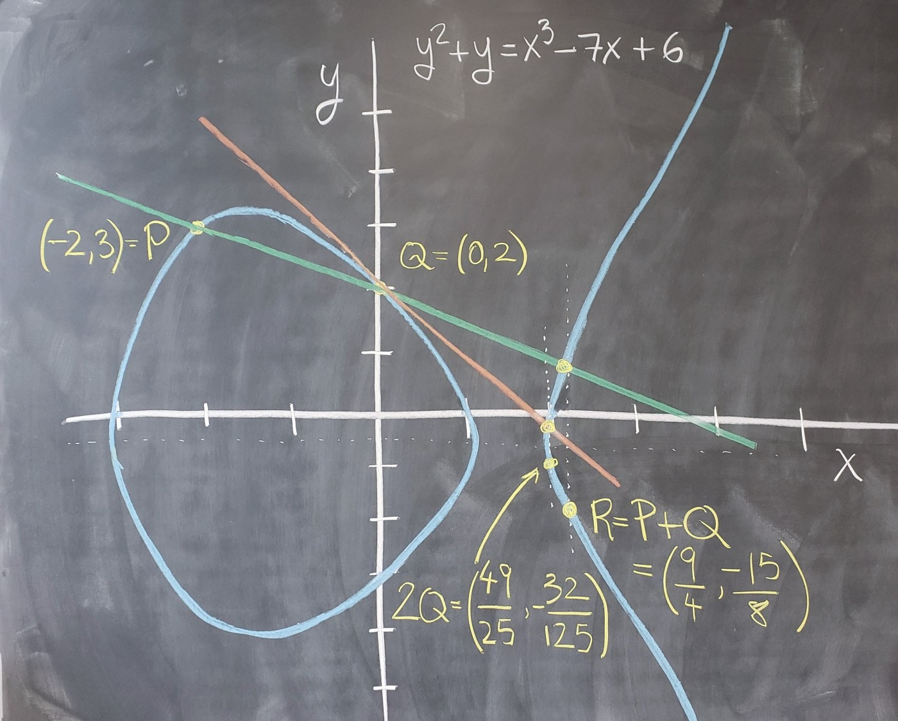
My brother asked me about my ongoing thesis research, and he listened attentively to my explanation of what an elliptic curve is. The expression in his face slowly turned from curious to mystified. While my excitement grew, discussing questions about ranks of an elliptic curve (e.g., how do you compute the rank, what are the possible values of the rank?), his bafflement grew in unison. Clearly, he understood the basic concepts well enough, but not at all the reasons for my elation. Much harder to explain was the absurd amount of time that I had spent trying to construct an elliptic curve of high rank.
Not being able to transfer my enthusiasm to him, I was frustrated, until the realization hit me that I was in front of the proverbial mirror. His response to my explanations about elliptic curves exactly mimicked my response to his convoluted and expensive plans to find a desert owl (also known as Hume’s owl, or Strix hadorami) perhaps in Israel, otherwise in Oman. As a side note, a few years later he traveled to Israel, where he heard the owl but could not see it. Many years later, he was able to spot and photograph a Hume’s owl in Oman. On the other hand, my search for an elliptic curve of high rank is ongoing, 20 years later. I have found, however, some exciting curves along the way, such as the curve of rank 12 given by y^2 = x^3 + 4510328029x^2 + 622726581362777216x (see this paper, with J. Aguirre and J-C. Peral.)
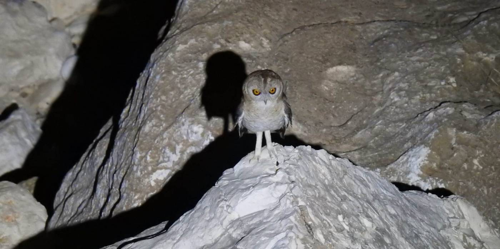
Why was my brother obsessed about finding a desert owl? Why am I driven to find an elliptic curve of high rank? We were on very similar quests, and both our quests are unexplainable to anyone who is not embarked on such an specialized adventure.
A few years later, I was a postdoc at Cornell. The university is located in Ithaca, NY, an area known to most people for its beautiful gorges and finger-like lakes. Birders, however, know Cornell for its Lab of Ornithology. Soon after I told my family that I was moving to Ithaca, Carlos asked me to scout the Lab, and assured me that he would soon come visit to explore the location together. The Lab’s lands around the visitor’s center form a 230-acre bird sanctuary, so my wife, our math friends, and I, used to go hike in the trails sometime during weekends. During one hike, my friend Etienne spotted a large and colorful woodpecker, known as the pileated woodpecker (which Woody Woodpecker was modeled after).
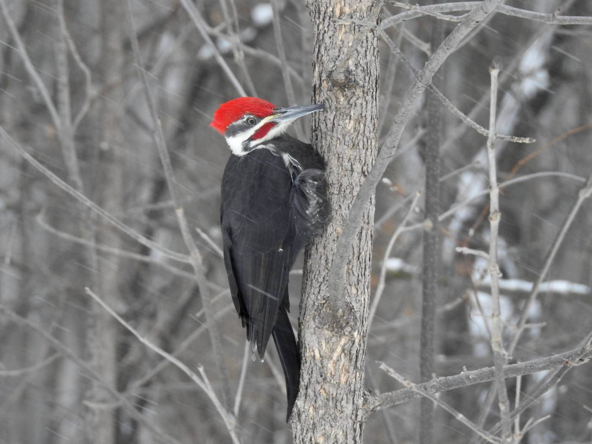
The pileated woodpeckers, somewhat rare and elusive to find elsewhere, seemed abundant in the Lab’s hikes, and we used to spot them often in our hikes. When I told my brother, he was livid, as he had never seen one. He has a soft spot for woodpeckers, and well, the pileated is the King of woodpeckers. So he swore to visit as soon as possible, so he could cross off the bird off his birding list. A few months later, Carlos arrived to Ithaca.
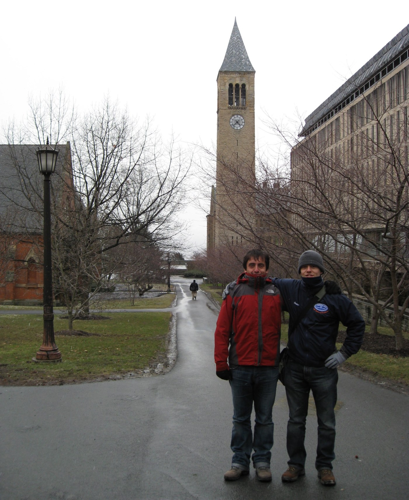
Soon after his arrival, we drove to the Lab of Ornithology, and walked the trails. The woodpeckers were nowhere to be seen. We continued to walk the trails, and the birds had vanished. Perhaps it was too early in the season. Or they were in another part of the park. Maybe they were there all along, but we did not spend enough time in the trails to spot them. So we went home, and we returned to the Lab trails the next day. Around and around the trails we went, in endless circles, and never saw or heard a single Dryocopus pileatus. Later that night, back in my apartment, we commiserated together on his bad luck, grilled some meat, and drank Sam Adams beer well into the night, while cursing the pileated woodpeckers and their lineage. (Carlos would not cross the pileated woodpecker off the list until he saw one in December 2017.)
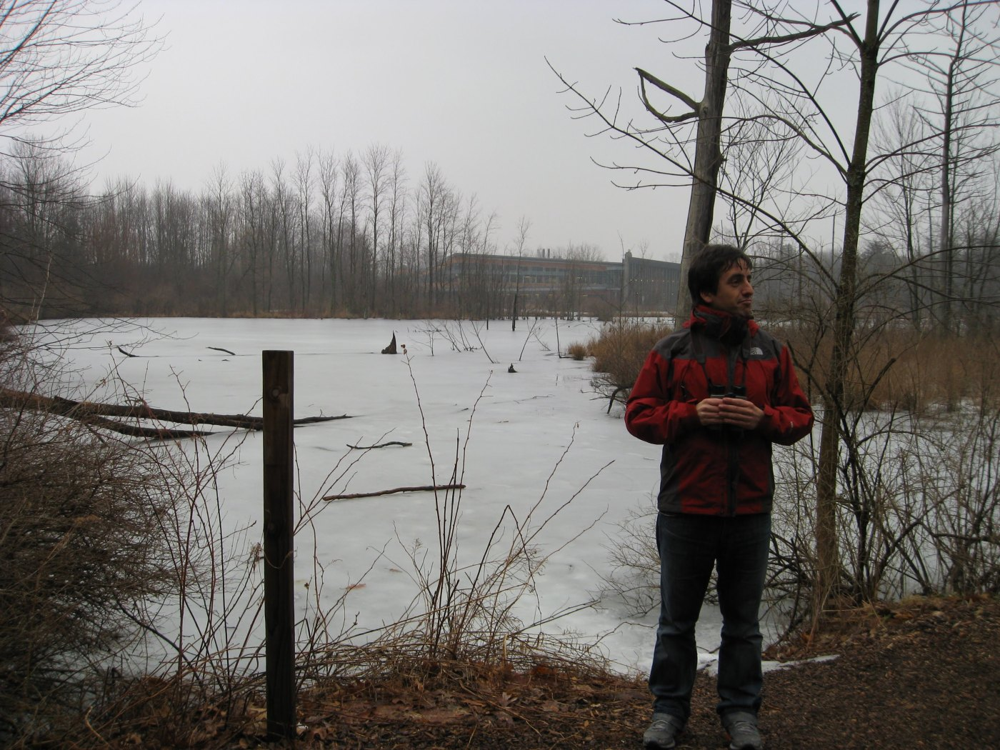
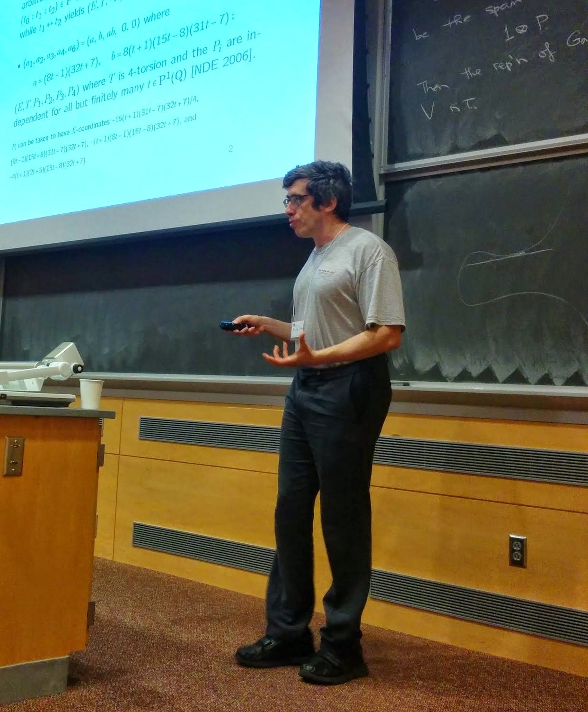
This time, I could perfectly relate to what Carlos was going through as I had recently found myself in what I considered a similar situation. As it happens, not long before Carlos’ visit to Ithaca, Noam Elkies (Harvard University) had shocked the number theory community when he found the elliptic curve with the highest rank known to date (a curve of rank at least 28; the previous record was 24 — see Andrej Dujella’s page on rank records). I was simply amazed, flabbergasted really, that such a curve had been found. If anything, I was extraordinarily jealous of the excitement that Elkies must have felt when he spotted this curve in the wild for the first time ever. Meanwhile I had been going around and around in circles, trying to find a similar curve. Perhaps I was looking in the wrong range of coefficients. Or I had not sufficiently refined my sieve methods in order to find them. Maybe they were there all along, but I had not used enough computer time to run into one.
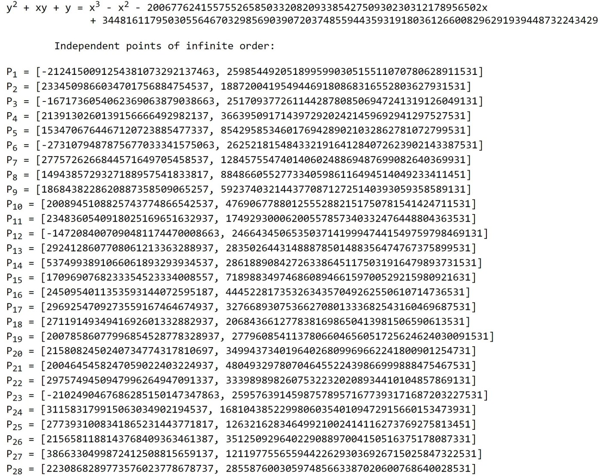
In December 2017, Carlos and Sara (Carlos’ partner) returned to the US for a birding road trip, that would take him from Massachusetts to Minnesota, and would include a dramatic car accident in Michigan (which, luckily, they survived relatively unscathed). One of the main objectives of the trip was to find a snowy owl, which is somewhat abundant during the winter months in the coastal areas of Massachusetts. I had tried to find the white owl in vain the previous winter, so I joined their expedition to Cape Cod for a day, in hopes of catching a glance of the large flying predator.
Cornell’s Lab of Ornithology runs a website (eBird.org) that allows birders to record their latest sightings, so we knew of a couple of locations in Cape Cod where the white birds had been seen, in the last couple of days: Chatham (the “elbow” of the Cape), and the beaches north of Provincetown (the “knuckles of the fist” of the Cape). The first location, Chatham, is the prototypical New England Cape Cod town, with a vast sandy beach directly exposed to the Atlantic Ocean, where harbor and gray seals sunbathe, and in the water, the great white sharks await for the mammals to enter their territory. The snowy owls, that fish in shallow waters in broad daylight, are seen resting on the beaches, so we walked along the idyllic coast of Chatham in freezing temperatures and frigid winds that were rather painful on any inch of exposed skin. After a couple of fruitless hours going up and down the beach, there was no sign of the owls, so we returned to the car, to warm up and drive up north to the beaches of Provincetown.
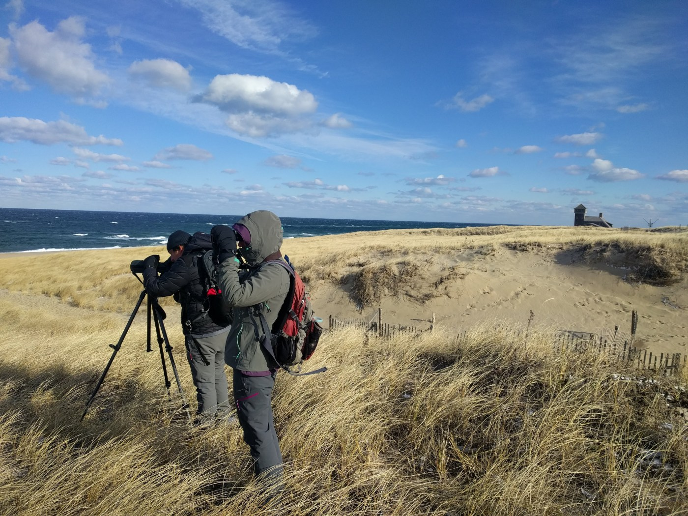
The north side of Cape Cod was even windier and colder. As soon as we left the car, and we started walking through the sand dunes, towards the ocean, my hands froze solid despite wearing my trusty winter gloves. The beautiful sand dunes were ridiculously hard to walk on with hiking boots, equipment on shoulders, frigid wind cutting our faces, and a stomach that had been growling for a well-deserved lunch for the last couple of hours. Yet, we persevered — rather, they persevered, and I followed them. After hiking for, what seemed and probably were a few miles, we reached a lighthouse at the end of the land. There was no owl to be seen, so we started hiking back to the car, next to the ocean. My hip started hurting from walking on the unstable ground, I could not feel the tips of my fingers, the skin of my face seemed about to crack, and my hunger was starting to be the greatest problem of all. The mood was dark, my friends.
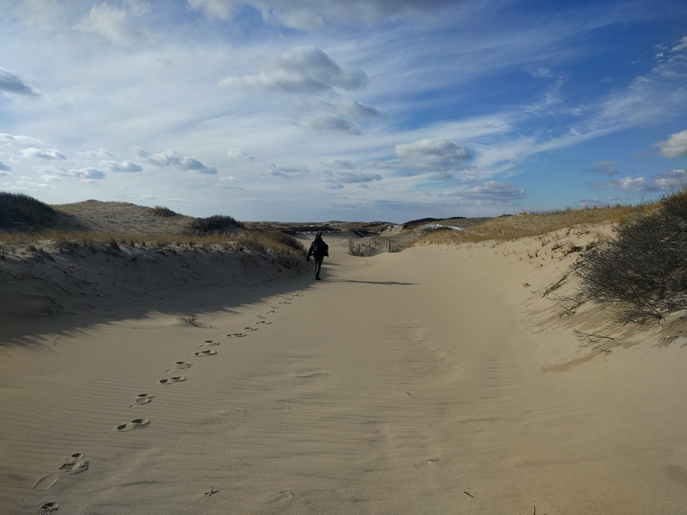
And then, as I mumbled a long string of curses and swear words in several languages, our nearby presence scared a snowy owl, that flew majestically only to land a few yards away from us. The bird was much larger than I could have imagined: a massive, strong owl, with bright white feathers, and a few black spots. Suddenly, the pain and suffering were gone, and while we whispered cries of excitement, we took turns looking through binoculars and telescope, as the owl looked at us with suspicious narrow eyes.
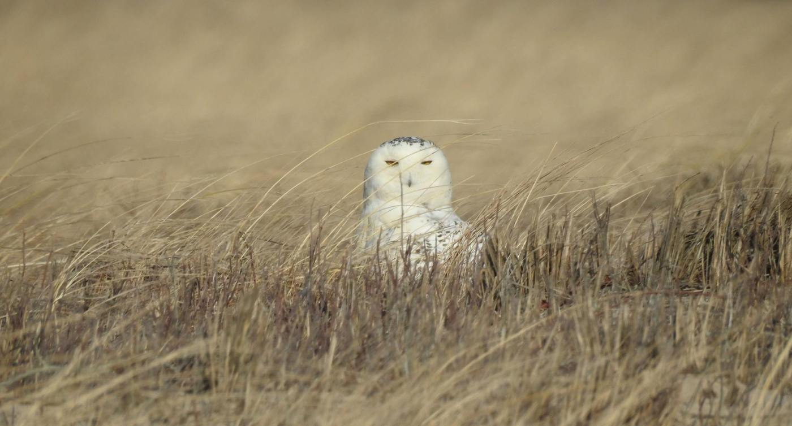
A couple days later, Carlos and Sara departed, on their way to Minnesota, and I continued with my own research, from the comfort of my heated house, with a nice cup of hot coffee in my hands (see How to Do Research in Pure Math). The project, though, was hard and slow going. Early in 2016, Jennifer S. Balakrishnan, Wei Ho, Nathan Kaplan, Simon Spicer, William Stein, and James Weigandt had released a database of 238,764,310 elliptic curves, and this was precisely the kind of data I needed to put together a probabilistic model for the ranks of elliptic curves, an approach that I had been ruminating for years. In a very real sense, I had been walking on shifty sand dunes of elliptic curves for about two years, and I was tired. The goal, seemingly tractable at first, now felt farther and farther out of reach, as I dove deeper and deeper into probability theory to create a formal probability space that would hopefully predict, accurately, the finer patterns in the distribution of ranks of elliptic curves revealed by the database. Day after day, I had forced myself in front of the computer, analyzed more data, produced more refined models, and continued attempting different candidates for my probability space. On many days, the mood was dark, even darker than on that day on the beaches of Cape Cod. But the image of the glorious Bubo scandiacus, the snowy owl, on my desktop kept me going, as a reminder of my goal at the end of the road. In February 2018, everything clicked into place, and I was able to admire an snowy owl of my own creation.
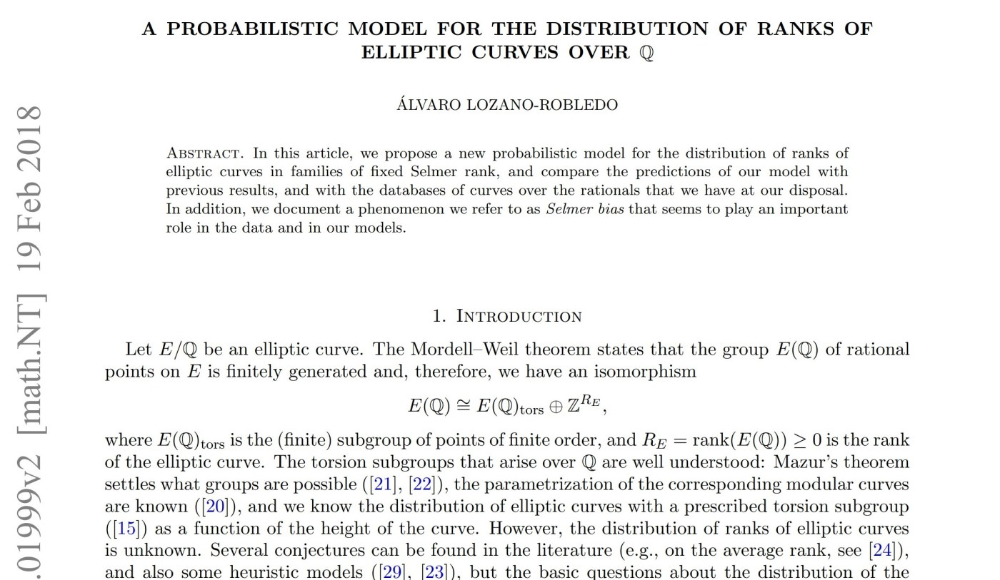
A few months later, I received an excellent referee report that made many wonderful suggestions, and pointed out some significant shortcomings in the 2018 version of the preprint. I worked on the same paper for yet another year and a half, slowly sinking in sand dunes, lost at times in the darkest moods, until all of a sudden, an imaginary snowy owl majestically flew by my side, and I finished a new draft of the paper which was posted in the arXiv in March 2020. Hopefully, it will stick this time.